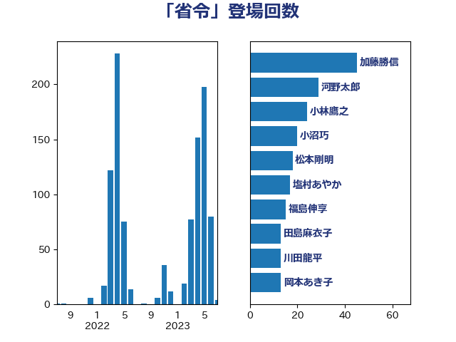

単語「省令」

| 小林鷹之 | 自由民主党 | 24 回 |
| 小沼巧 | 立憲民主党 | 24 回 |
| 塩村あやか | 立憲民主党 | 22 回 |
| 田村貴昭 | 日本共産党 | 16 回 |
| 音喜多駿 | 日本維新の会 | 16 回 |
| 田村まみ | 国民民主党 | 13 回 |
| 牧島かれん | 自由民主党 | 12 回 |
| 舟山康江 | 国民民主党 | 12 回 |
| 萩生田光一 | 自由民主党 | 11 回 |
| 奥野総一郎 | 立憲民主党 | 10 回 |
| 小泉進次郎 | 自由民主党 | 10 回 |
| 後藤茂之 | 自由民主党 | 10 回 |
| 青木愛 | 立憲民主党 | 10 回 |
| 片山大介 | 日本維新の会 | 9 回 |
| 吉川沙織 | 立憲民主党 | 8 回 |
| 本庄知史 | 立憲民主党 | 8 回 |
| 赤羽一嘉 | 公明党 | 7 回 |
| 田村憲久 | 自由民主党 | 6 回 |
| 笠井亮 | 日本共産党 | 6 回 |
| 西村康稔 | 自由民主党 | 6 回 |
| 國重徹 | 公明党 | 5 回 |
| 川田龍平 | 立憲民主党 | 5 回 |
| 斉藤鉄夫 | 公明党 | 5 回 |
| 末松信介 | 自由民主党 | 5 回 |
| 渡辺周 | 立憲民主党 | 5 回 |
| 畦元将吾 | 自由民主党 | 5 回 |
| 笹川博義 | 自由民主党 | 5 回 |
| 緒方林太郎 | 無所属 | 5 回 |
| 道下大樹 | 立憲民主党 | 5 回 |
| 伊藤孝恵 | 国民民主党 | 4 回 |
| 塩川鉄也 | 日本共産党 | 4 回 |
| 柴田巧 | 日本維新の会 | 4 回 |
| 梅村聡 | 日本維新の会 | 4 回 |
| 浜田聡 | NHK党 | 4 回 |
| 芳賀道也 | 国民民主党 | 4 回 |
| 足立康史 | 日本維新の会 | 4 回 |
| 青山大人 | 立憲民主党 | 4 回 |
| 伊藤岳 | 日本共産党 | 3 回 |
| 国光あやの | 自由民主党 | 3 回 |
| 奥下剛光 | 日本維新の会 | 3 回 |
| 宮本徹 | 日本共産党 | 3 回 |
| 山口壯 | 自由民主党 | 3 回 |
| 山岸一生 | 立憲民主党 | 3 回 |
| 山本剛正 | 日本維新の会 | 3 回 |
| 岸田文雄 | 自由民主党 | 3 回 |
| 森山浩行 | 立憲民主党 | 3 回 |
| 橋本岳 | 自由民主党 | 3 回 |
| 田中健 | 国民民主党 | 3 回 |
| 神津たけし | 立憲民主党 | 3 回 |
| 神谷裕 | 立憲民主党 | 3 回 |
| 若宮健嗣 | 自由民主党 | 3 回 |
| 金子恭之 | 自由民主党 | 3 回 |
| 青山繁晴 | 自由民主党 | 3 回 |
| 高木かおり | 日本維新の会 | 3 回 |
| 上川陽子 | 自由民主党 | 2 回 |
| 井坂信彦 | 立憲民主党 | 2 回 |
| 倉林明子 | 日本共産党 | 2 回 |
| 吉田統彦 | 立憲民主党 | 2 回 |
| 大串博志 | 立憲民主党 | 2 回 |
| 大野敬太郎 | 自由民主党 | 2 回 |
| 寺田静 | 無所属 | 2 回 |
| 小宮山泰子 | 立憲民主党 | 2 回 |
| 徳永エリ | 立憲民主党 | 2 回 |
| 斎藤嘉隆 | 立憲民主党 | 2 回 |
| 木村次郎 | 自由民主党 | 2 回 |
| 柚木道義 | 立憲民主党 | 2 回 |
| 柴山昌彦 | 自由民主党 | 2 回 |
| 梶山弘志 | 自由民主党 | 2 回 |
| 津島淳 | 自由民主党 | 2 回 |
| 清水貴之 | 日本維新の会 | 2 回 |
| 田名部匡代 | 立憲民主党 | 2 回 |
| 石垣のりこ | 立憲民主党 | 2 回 |
| 石川香織 | 立憲民主党 | 2 回 |
| 礒崎哲史 | 国民民主党 | 2 回 |
| 竹谷とし子 | 公明党 | 2 回 |
| 紙智子 | 日本共産党 | 2 回 |
| 菅直人 | 立憲民主党 | 2 回 |
| 葉梨康弘 | 自由民主党 | 2 回 |
| 野上浩太郎 | 自由民主党 | 2 回 |
| 金子恵美 | 立憲民主党 | 2 回 |
| 鈴木敦 | 国民民主党 | 2 回 |
| 高橋千鶴子 | 日本共産党 | 2 回 |
| たがや亮 | れいわ新選組 | 1 回 |
| ながえ孝子 | 無所属 | 1 回 |
| 下野六太 | 公明党 | 1 回 |
| 中谷一馬 | 立憲民主党 | 1 回 |
| 伊東良孝 | 自由民主党 | 1 回 |
| 伊藤俊輔 | 立憲民主党 | 1 回 |
| 勝俣孝明 | 自由民主党 | 1 回 |
| 勝部賢志 | 立憲民主党 | 1 回 |
| 古川禎久 | 自由民主党 | 1 回 |
| 吉田忠智 | 立憲民主党 | 1 回 |
| 吉良州司 | 無所属 | 1 回 |
| 和田政宗 | 自由民主党 | 1 回 |
| 堤かなめ | 立憲民主党 | 1 回 |
| 大口善徳 | 公明党 | 1 回 |
| 大島敦 | 立憲民主党 | 1 回 |
| 宮路拓馬 | 自由民主党 | 1 回 |
| 寺田学 | 立憲民主党 | 1 回 |
| 小林茂樹 | 自由民主党 | 1 回 |
| 小野泰輔 | 日本維新の会 | 1 回 |
| 山本左近 | 自由民主党 | 1 回 |
| 山田勝彦 | 立憲民主党 | 1 回 |
| 岡田克也 | 立憲民主党 | 1 回 |
| 平沼正二郎 | 自由民主党 | 1 回 |
| 木村英子 | れいわ新選組 | 1 回 |
| 杉尾秀哉 | 立憲民主党 | 1 回 |
| 松沢成文 | 日本維新の会 | 1 回 |
| 松野博一 | 自由民主党 | 1 回 |
| 枝野幸男 | 立憲民主党 | 1 回 |
| 森屋隆 | 立憲民主党 | 1 回 |
| 森田俊和 | 立憲民主党 | 1 回 |
| 武田良太 | 自由民主党 | 1 回 |
| 池下卓 | 日本維新の会 | 1 回 |
| 河野太郎 | 自由民主党 | 1 回 |
| 浅野哲 | 国民民主党 | 1 回 |
| 渡辺孝一 | 自由民主党 | 1 回 |
| 渡辺猛之 | 自由民主党 | 1 回 |
| 湯原俊二 | 立憲民主党 | 1 回 |
| 漆間譲司 | 日本維新の会 | 1 回 |
| 熊野正士 | 公明党 | 1 回 |
| 玉木雄一郎 | 国民民主党 | 1 回 |
| 田嶋要 | 立憲民主党 | 1 回 |
| 田畑裕明 | 自由民主党 | 1 回 |
| 盛山正仁 | 自由民主党 | 1 回 |
| 石井苗子 | 日本維新の会 | 1 回 |
| 石川大我 | 立憲民主党 | 1 回 |
| 石田昌宏 | 自由民主党 | 1 回 |
| 福島伸享 | 無所属 | 1 回 |
| 稲富修二 | 立憲民主党 | 1 回 |
| 緑川貴士 | 立憲民主党 | 1 回 |
| 自見はなこ | 自由民主党 | 1 回 |
| 舞立昇治 | 自由民主党 | 1 回 |
| 舩後靖彦 | れいわ新選組 | 1 回 |
| 船田元 | 自由民主党 | 1 回 |
| 藤木眞也 | 自由民主党 | 1 回 |
| 藤田文武 | 日本維新の会 | 1 回 |
| 重徳和彦 | 立憲民主党 | 1 回 |
| 鈴木庸介 | 立憲民主党 | 1 回 |
| 青柳仁士 | 日本維新の会 | 1 回 |
| 高橋光男 | 公明党 | 1 回 |
| 麻生太郎 | 自由民主党 | 1 回 |